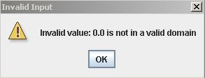

Metabolic Optimization and Simulation Tool
|
Help Topics Installing MOST
|
Installing MOST Java JRE 1.7. java.com/download. To determine if Java is installed and the installed version, visit the Downloads page. This is unnecessary for Macintosh since Java is included in the installation package. After installing MOST, if the error message below is displayed when starting up MOST:  click OK to close the error message and start MOST. When the program appears, click Options -> Set GLPK Properties (Alt+O then Alt+L), then click the "Reset to Defaults" button (Alt+R) then click the OK button (Alt+O or Enter). The error message will no longer be displayed. Download MOST for Windows Installer. It is recommended that any old versions of MOST be uninstalled prior to installation of the newest version. Double-click on MOST_Setup.exe and click the "Next" button: Click the "I Agree" button on the license dialog: Choose a destination folder or use the default, and click the "Next" button: Click the "Install" button: After installation is complete, click the "Finish" button. MOST has been successfully installed. If a message appears after installation stating that "This program might not have installed correctly.", just click "This program installed correctly", or "Cancel". MOST installed correctly.This message appears if an old version of MOST was present at the time of installation. MOST requires a Mixed Integer Linear Program solver (MILP) to run FBA and GDBB. MOST includes GLPK (GNU Linear Programming Kit), and Ipopt (Interior Point OPTimizer), both of which are free solvers. See Select Solvers for more information on solvers. Gurobi is free for academic use and can also be used by MOST as a solver. Installing Gurobi for Windows: Gurobi installation instructions can be found at http://www.gurobi.com/documentation/. Some programs or operating system permissions may prevent the MOST installer from working correctly. If the installer will not work, download the MOST Executable Jar and extract it into a directory, then double-click on the MOST.jar file to run MOST. Download MOST for Linux, and extract the gzip compressed file. MOST can be run from the command line using the java command: java -jar MOST.jar in the directory where the gzip was uncompressed. MOST requires a Mixed Integer Linear Program solver (MILP) to run FBA and GDBB. MOST can use either GLPK (GNU Linear Programming Kit), a free solver, or Gurobi which is free for academic use. Installing GLPK for Linux: MOST can use the Free GLPK solver for Linux. GLPK is a mixed integer and linear solver freely available as a package for most linux distributions. In addition, the GLPK for Java interface must also be installed. This can be done either through the package manager or through apt-get via the terminal using the following command. sudo apt-get install libglpk36 libglpk-java Source: http://en.wikibooks.org/wiki/GLPK/Linux_packages Installing Gurobi for Linux: Gurobi installation instructions can be found at http://www.gurobi.com/documentation/. Download MOST for Macintosh, then double-click on the .dmg file. Drag MOST App into Applications folder. Installing Gurobi for Mac: Gurobi installation instructions can be found at http://www.gurobi.com/documentation/. |